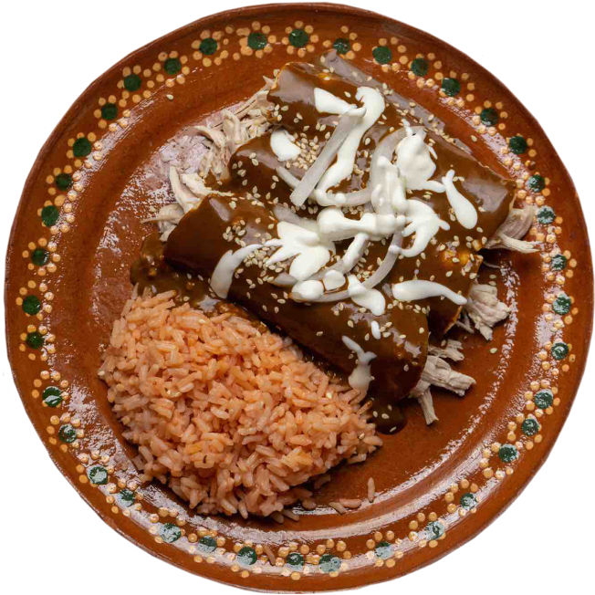

The Sasa Lele restaurant offers an interactive experience that allows you to discover the history of Mexican culture through its gastronomy and traditional dishes made by your own hands.
buttonsReservations
introduction
This weeks menu is based on "el dia de muertos". A Mexican holiday where families welcome back the souls of their deceased relatives for a brief reunion that includes food, drink and celebration.
